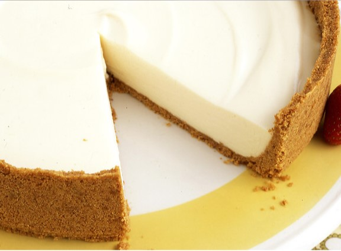

Main Page

No-Bake Cheesecake
2 packages (20 sheets) graham crackers
156g unsalted butter, melted
25g sugar
2 225g packages cream cheese, room temperature
1 382g can sweetened condensed milk
57g fresh lemon juice
1 teaspoon vanilla extract
Full cooking time: 3h 30m
1) Put graham crackers in a large resealable plastic bag, and crush them with a rolling pin until very fine crumbs form.
2) Pour crumbs into a medium-sized bowl; stir in sugar. Add butter, and stir until well combined.
3) Press the crumb mixture into a 9" springform pan, spreading it 1 1/2 to 2 inches up the side; press flat. Chill crust in freezer at least 10 minutes.
4) While chilling the crust, make the filling: Using an electric mixer set at medium-high speed, beat the cream cheese in a large bowl until smooth. Beat in the condensed milk a little at a time, scraping the sides of the bowl, as necessary. Beat in the lemon juice and vanilla.
5) Pour the filling into the crust; smooth the top with a rubber spatula. Cover with plastic wrap, and refrigerate until firm, 2 1/2 to 3 hours.
6) Unclasp sides of pan, and remove cheesecake.